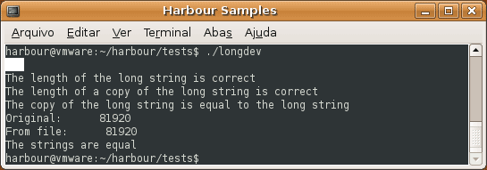

<br>
longdev application running on Linux
<br><br>
<span class="read_more">NOTE: The Clipper limits the size of a string of up to
65535 bytes (64 KiB). In Harbour this limit is much higher: you could load
a file with more than 2 GiB to inside a memory variable!</span>
